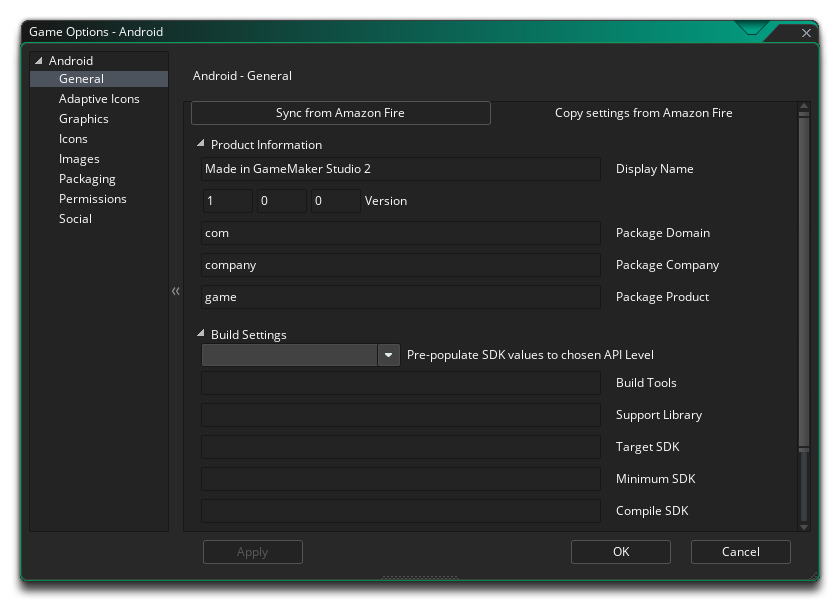
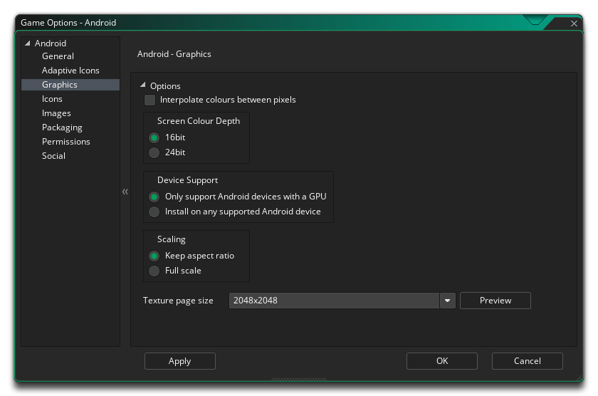

Cette section présente les différentes options qui s'offrent à vous et qui contrôlent la façon dont vos projets de jeux Android seront compilés. Les différentes sections sont:

La première partie de la section Général est consacrée aux informations sur le produit et aux paramètres de construction. Vous devez remplir les informations sur le produit, qui incluent le nom d'affichage du projet, ses informations de package, qui se composent d'un domaine, d'une société et d'un produit. Les informations sur le paquet ne peuvent être composées que de lettres de A à Z et de chiffres de 0 à 9, sans symboles ni autres caractères spéciaux, et ne devraient pas comporter de majuscules. Ces détails seront ensuite utilisés pour générer un ID de package au format " com.company.myappname ".
Vous devez ensuite définir les versions SDK cible, minimum et compilation. La version Compiler SDK est la version de l'API avec laquelle le projet est compilé. Cela signifie que vous pouvez utiliser Android fonctionnalités de l'API Android incluses dans cette version de l'API. Si vous essayez d'utiliser les fonctionnalités de l'API 16, par exemple, mais que vous définissez Compile SDK 15, vous obtiendrez une erreur de compilation. Si vous définissez Compile SDK sur 16, vous pouvez toujours exécuter l'application sur un périphérique API 15 (ainsi que toutes les autres versions précédentes).
Le SDK cible, cependant, n'a rien à voir avec la façon dont votre application est compilée ou avec les API que vous pouvez utiliser. Le SDK cible indique que vous avez testé votre application sur (jusqu'à et y compris) la version que vous spécifiez. C'est simplement pour donner au Android exploitation Android une idée de la façon dont il devrait gérer votre application en termes de fonctionnalités du système d'exploitation. À toutes fins pratiques, la plupart des applications vont vouloir définir Target SDK sur la dernière version de l'API (telle qu'elle est utilisée par le paramètre Compiler SDK). Cela assurera que votre application est la plus belle possible sur Android appareils Android les plus récents.
La version minimale du SDK est le niveau d'API minimum qui exécutera votre projet. Par défaut, cette valeur est définie sur 9 et, en général, tout ira bien, mais si vous ajoutez des extensions, elles peuvent nécessiter un niveau d'API minimum plus élevé.
La deuxième partie de la section Général couvre les architectures de CPU à construire, avec les options suivantes disponibles (vous pouvez les sélectionner toutes ou seulement celles dont vous avez besoin, mais notez que chacune d'elles s'ajoutera à la taille finale de la compilation apk ):
- Construire pour ARMV5 (coché par défaut)
- Construire pour ARMV7 (coché par défaut)
- Construire pour x86
- Construire pour Mips
Après avoir configuré cela, vous pouvez sélectionner les différentes orientations que votre jeu peut être exécuté pour la meilleure expérience utilisateur. Les options disponibles sont:
- Paysage
- Portrait
- Paysage-retourné
- Portrait-inversé
Enfin, vous avez les options suivantes:
- Activer la prise en charge de Bluetooth / iCade: Ceci ajoutera du support pour les gamepads bluetooth ou iCade à votre projet de jeu. Ceci est activé par défaut.
- Activer la prise en charge de la manette MOGA: Cela activera la prise en charge des contrôleurs MOGA. Notez que toutes les fonctionnalités MOGA sont accessibles via une extension, et lorsque vous cochez cette option, vous serez invité à télécharger et installer l'extension MOGA à partir du Marketplace. Cette option est désactivée par défaut.
- Exécution de l' analyse de code de charpie: lorsque cette option est marquée, les outils de génération exécutent une analyse de code de charpie sur le projet au fur et à mesure de sa construction, ce qui donne plus d'informations dans la fenêtre de sortie. le fichier sera également créé, avec le chemin vers le fichier affiché à la fin de la compilation dans la fenêtre de sortie). Notez que tout ce qui est signalé par une analyse de charpie n'est pas forcément problématique pour votre jeu, et que cela soit activé peut signifier que votre jeu ne se compile plus, même s'il est éteint, il compilera et fonctionnera correctement. Essentiellement, ceci est seulement pour le débogage, et l'option est désactivée par défaut.
- Emplacement d'installation: vous pouvez définir ici l'emplacement d'installation par défaut de votre jeu. Cela peut être réglé sur Automatique, auquel cas le jeu sera installé à l'emplacement choisi par l'utilisateur sur son appareil, ou il peut être réglé sur Préférer Externe qui essayera toujours d'installer le jeu sur le stockage externe de l'appareil..
Vous pouvez également définir la marge de veille Android ici. Cette option est liée à la réduction du bégaiement lors de l'exécution de votre jeu sur des systèmes spécifiques. Fondamentalement, si votre jeu fonctionne plus vite que la vitesse de votre salle, GameMaker Studio 2 "dormira" pendant le temps restant, mais ce sommeil peut être assez imprécis et vous pouvez souvent mettre fin à votre sommeil plus longtemps que nécessaire. provoque le bégaiement. Pour contourner cela, nous pouvons dormir moins longtemps, puis nous asseoir dans une boucle serrée pour le rendre plus précis - bien que le problème de s'asseoir dans une boucle est que cela provoque une augmentation de l'utilisation du processeur, qui peut à son tour augmentez la température de votre processeur et votre appareil utilise plus de batterie. Par défaut, cette valeur est définie sur 4 et dans 99,99% des cas, cela vous convient, mais pour les périphériques bas de gamme ou pour les périphériques avec beaucoup de processus d'arrière-plan, cette solution n'est peut-être pas idéale et n'a pas de valeur de 5 à 10 peuvent être requis. Notez cependant qu'il s'agit d'une configuration spécifique à un périphérique et que ce qui fonctionne sur votre périphérique de construction peut ne pas convenir à un autre utilisateur, et en tant que tel, en cas de doute, laissez-le à 4.

Ici, vous pouvez modifier les détails suivants relatifs à l'affichage de votre jeu, avec les options suivantes disponibles:
- Interpoler les couleurs entre les pixels: Active l'interpolation, qui "lisse" les pixels. pour les graphismes en pixels nets, il devrait être désactivé, mais si vous avez de beaux dégradés alpha et des graphismes lissés, il vaut mieux le laisser sur. La valeur par défaut est désactivée.
- Profondeur de la couleur de l'écran: Ceci peut être utilisé pour définir la profondeur de couleur pour le rendu en 16 bits ou 24 bits. Cela affectera la compatibilité avec certains appareils plus anciens si elle est réglée sur 24 bits, et augmentera également l' ashmem nécessaire (c'est la mémoire partagée sur Android appareils Android ).
- Prise en charge des périphériques Cette option définit si vous ne souhaitez prendre en charge que les périphériques dotés d'un GPU dédié ou tous les périphériques. Fondamentalement, si votre jeu a des fonctions de dessin avancées comme le mélange alpha, le mélange additif, les surfaces, etc... vous devriez le limiter aux appareils qui ont un GPU sinon vous risquez d'avoir des commentaires négatifs et une mauvaise évaluation de votre jeu à des erreurs graphiques ou des accidents sur les appareils plus anciens.
- Mise à l'échelle: votre jeu peut être configuré pour redimensionner automatiquement le canevas de dessin afin de conserver les proportions dans le navigateur, ou vous pouvez choisir de l'étirer pour l'adapter. L'option Ajuster pour ne pas afficher le jeu en plein écran dans le navigateur, mais plutôt étirer ce qui est dessiné pour s'adapter à la taille de la toile, tel que défini par la première pièce du jeu.
Enfin, il y a la possibilité de définir la taille de la page Texture. La taille par défaut (et la plus compatible) est 2048x2048, mais vous pouvez choisir n'importe où entre 256x256 jusqu'à 4096x4096. Il y a aussi un bouton marqué Aperçu qui va générer les pages de texture pour cette plate-forme, puis ouvrir une fenêtre afin que vous puissiez voir à quoi ils ressemblent. Cela peut être très utile si vous souhaitez voir comment les pages de texture sont structurées et éviter d'avoir des pages de texture plus grandes (ou plus petites) que nécessaire.
NOTE: Soyez conscient que plus la taille de la page de texture est grande, moins votre jeu sera compatible.
Cette section vous permet d'ajouter les différentes images d'icônes dont votre projet aura besoin pour les différentes pages et périphériques du magasin. Toutes les images d'icônes doivent être créées en tant que fichiers PNG 24 bits des tailles appropriées données.
Il est à noter que GameMaker Studio 2 dispose d'un outil Project Image Generator qui peut être utilisé pour créer automatiquement toutes les icônes requises pour les différentes plates-formes cibles sur lesquelles votre jeu est compilé. Si vous utilisez cet outil, vous devez réviser les images créées pour vous assurer qu'elles correspondent à vos besoins.
Ici, vous pouvez ajouter un écran de démarrage à votre fichier de jeu final, à la fois pour les modes paysage et portrait, qui seront affichés pendant le chargement du jeu sur l'appareil. Cet écran devrait être un fichier PNG 24 bits, et il est recommandé d'avoir la même taille que la première pièce (ou vue) de votre jeu. Si vous souhaitez que l'écran de démarrage soit affiché pendant une période donnée, vous pouvez également le définir ici de 0 à 10 secondes (le temps par défaut de 0 signifie qu'il n'apparaîtra que pour la durée du chargement de l'actif).
Il est à noter que GameMaker Studio 2 dispose d'un outil Project Image Generator qui peut être utilisé pour créer automatiquement toutes les images requises pour les différentes plates-formes cibles sur lesquelles votre jeu est compilé. Si vous utilisez cet outil, vous devez réviser les images créées pour vous assurer qu'elles correspondent à vos besoins.
L'une des fonctionnalités de l'utilisation de Google Play pour vos jeux Android est la possibilité de concéder des licences pour vos jeux. Cela signifie que vos jeux seront contrôlés par Google afin que seules les personnes qui les ont téléchargées via leur marché puissent jouer au jeu, évitant ainsi que des copies illégales de votre produit ne soient distribuées.
Pour activer cette fonction dans votre jeu, vous devez d'abord marquer la case Activer la licence Google, puis copier votre clé publique dans la boîte intitulée Clé publique de licence Google. Vous pouvez trouver cette licence en accédant à la page des développeurs Google Play, puis en sélectionnant le jeu que vous souhaitez modifier. Une fois sur la page de profil du jeu, faites défiler jusqu'à la section intitulée «Services et API» et là vous devriez trouver la clé publique qui est nécessaire pour que cette fonctionnalité soit activée.
Une fois activé, si quelqu'un qui n'est pas autorisé à posséder votre jeu essaie de le lire, une boîte de message contextuelle s'affiche pour l'informer que la licence est introuvable sur son appareil, puis lui donner la possibilité de réessayer. et testez à nouveau, ou quittez le jeu.
Une autre caractéristique de Licensing est que votre jeu peut ensuite utiliser les extensions APK. C'est un moyen de contourner la taille d'application maximale de 50 Mo imposée par Google Play (et seulement Google Play). Il va créer votre jeu en deux parties: une petite *.apk fichier et un plus grand *.zip fichier qui contiendra tous les actifs de vos jeux, qui sont tous deux téléchargés sur le magasin. Lorsque l'utilisateur lance votre jeu pour la première fois, le zip sera téléchargé et décompressé. Vous pouvez trouver plus de détails de cette option ici.
À partir de cet onglet, vous pouvez modifier certaines des autorisations que votre jeu peut demander dans le manifeste Android. GameMaker Studio 2 attribuera les autorisations automatiquement selon les besoins, mais il est possible que vous ayez besoin d'une autorisation pour votre jeu qui n'a pas été correctement affectée (par exemple, lorsque vous utilisez des extensions personnalisées). Dans ce cas, cochez la case appropriée. La liste ci-dessous décrit celles qui sont disponibles:
- WRITE_EXTERNAL_STORAGE: Permet à votre jeu d'écrire sur le stockage externe.
- READ_PHONE_STATE: Autorise l'accès en lecture seule à l'état du téléphone.
- ACCESS_NETWORK_STATE: Autorisez votre jeu à accéder aux informations sur les réseaux.
- INTERNET: Autorisez votre jeu à ouvrir des sockets réseau.
- BLUETOOTH: Permet à votre jeu de se connecter à des appareils Bluetooth couplés.
- RECORD AUDIO: Permet à votre jeu d'enregistrer l'entrée audio du microphone.
NOTE: Si vous n'êtes pas sûr d'en avoir besoin, vous devrez probablement les laisser GameMaker par défaut et laisser GameMaker: Studio gérer les permissions pour votre jeu.
Cette section est pour activer différentes fonctionnalités sociales dans votre jeu Android. Les options suivantes peuvent être choisies:
- Facebook: Si vous avez besoin des fonctions Facebook, vous devez cocher cette case, puis indiquer l' identifiant de l' application Facebook et le nom de l'application Facebook. Notez que toutes les fonctionnalités de Facebook sont accessibles via une extension, et lorsque vous cochez la case Utiliser Facebook, vous serez invité à télécharger et à installer l'extension Facebook sur le Marketplace.
- Google - Activer les notifications Push: pour que votre jeu utilise les notifications Push, elles doivent d'abord être activées ici, sinon elles ne fonctionneront pas. Les notifications locales sur Android ne requièrent pas le "GCM Sender ID", mais vous devez l'ajouter si vous souhaitez créer des notifications à distance.
- Google - Activer les services Google: si vous souhaitez activer les réussites et les classements pour Google App Store, vous devez cocher la case Activer les services Google. Une fois que vous avez sélectionné ceci, vous serez invité à télécharger et à installer l'extension correspondante sur le Marketplace, puis à coder la fonctionnalité dans votre jeu en utilisant les fonctions des cartes d'extension. Notez que si vous utilisez Google Play, vous devrez ajouter votre identifiant d'application dans cet onglet pour que les services fonctionnent (vous pouvez le trouver dans votre tableau de bord Google Play Developers).
- Google - Activer Cloud Saving: Cocher cette case activera Google Cloud Saving, et (comme ci-dessus) vous demandera de télécharger et d'installer l'extension pertinente de la place de marché.
- Amazon - Activer Amazon IAP: si vous utilisez des services Amazon, vous devez cocher cette case. Une fois cette option sélectionnée, vous serez invité à télécharger et à installer l'extension correspondante sur Marketplace, et toutes les fonctions requises sont incluses dans le package d'extension.